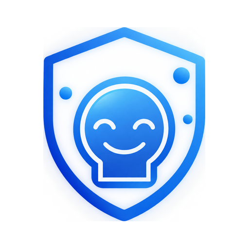

Consejos
Pequeños hábitos que pueden ayudarte a reducir tus episodios.

Cuerpo tranquilo, mente despejada — así es más difícil que empiece un episodio.
Guías completas
Toca una guía para abrirla.
Hábitos del día a día
Mantente hidratado/a
La deshidratación es uno de los desencadenantes más comunes. Intenta beber agua de forma constante durante el día, no solo cuando sientas sed.
Cuida tu horario de sueño
Dormir y despertar a horas irregulares puede desencadenar episodios. Intenta mantener un horario constante, incluso los fines de semana.
Gestiona el estrés
Técnicas de respiración, pausas activas o estiramientos cortos durante el día pueden ayudar a reducir la tensión que precede a un episodio.
Evita saltarte comidas
El ayuno prolongado puede bajar tu glucosa y actuar como disparador. Intenta comer en horarios regulares.
Descansa la vista
Si pasas muchas horas frente a una pantalla, aplica la regla 20-20-20: cada 20 minutos, mira algo a 20 pies (6 metros) durante 20 segundos.
Registra siempre que puedas
Entre más consistente seas registrando tus síntomas prodrómicos, más precisas serán las predicciones de MigraSense.
Registrar ahoraEstos consejos son informativos y no reemplazan una consulta médica. Si tus episodios son frecuentes o intensos, consulta con un profesional de salud.